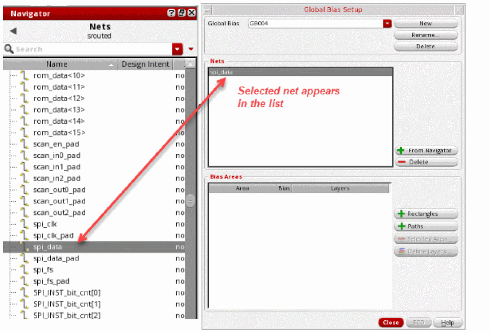
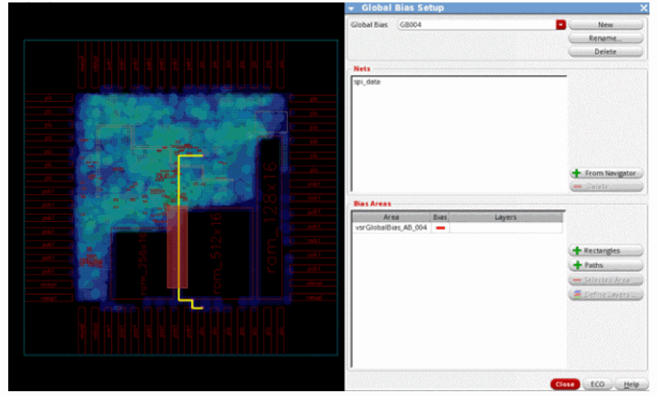
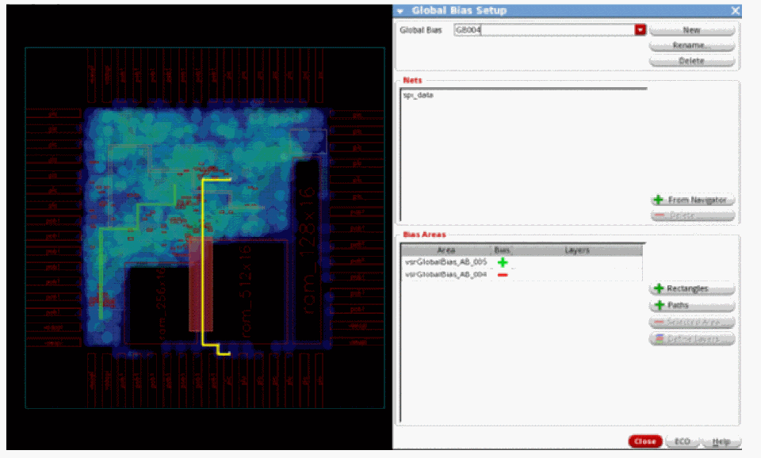
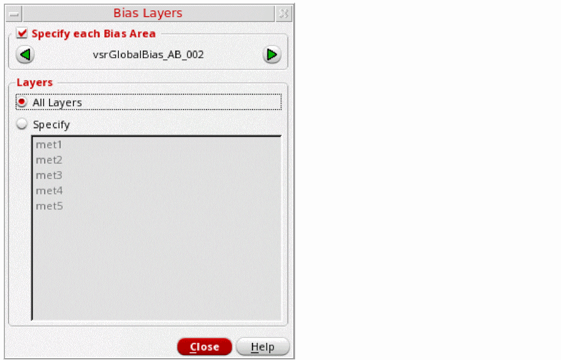
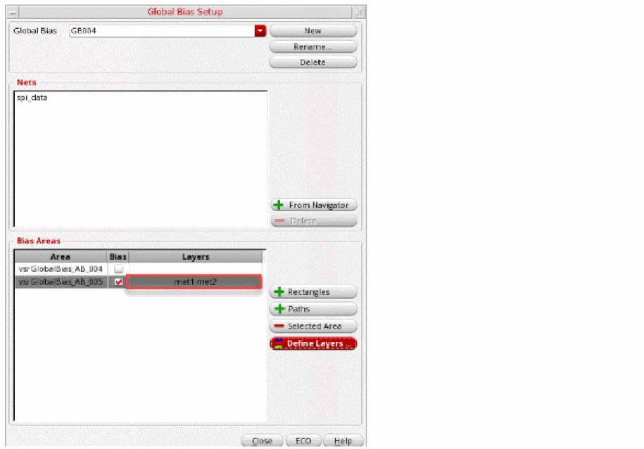
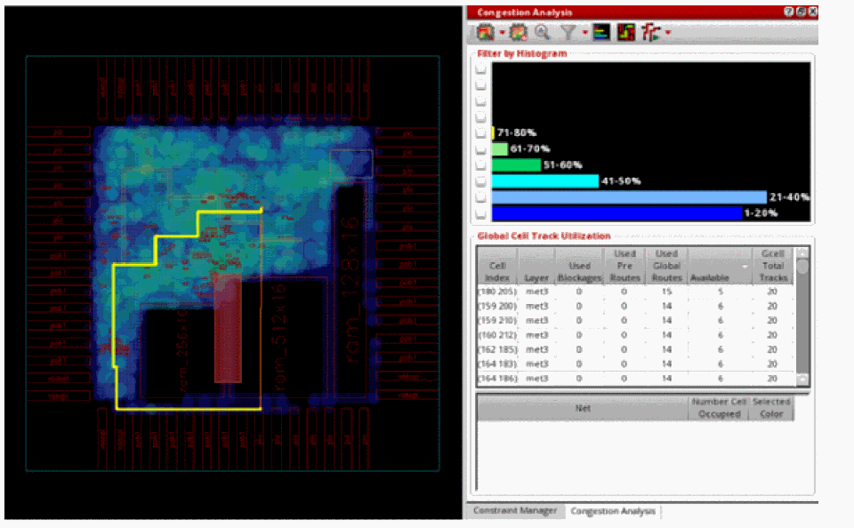

Creating Multiple Global Bias Constraints for Specific Layers
This section describes how to create a negative bias region constraint, create a bias path constraint on a specified set of layers and then run ECO global routing and congestion analysis.
- Select a net, group of nets, or a bus from the Navigator assistant. In this example, the net spi_data is selected from the Navigator assistant.
-
Click the Global Bias Setup icon
 on the Congestion Analysis assistant toolbar.
on the Congestion Analysis assistant toolbar.
The Global Bias Setup form displays. -
Click the New button to create a new global bias constraint group.
The form is updated to create a default group named as GB004. This is an auto-generated global bias name. Also, the net selected in the Navigator assistant appears in the Nets list box.
 - To add the negative bias region, click the + Rectangles button.
-
Click and drag to draw a region in the heat map.
The region created on the heat map is used as the coordinates for the bias area. The bias area is automatically assigned a name called vsrGlobalBias_AB_004 and is displayed in the Bias Areas list box. -
To create a negative bias, click the green ± symbol in the Bias column next to the bias area. This displays a red — symbol, which indicates a negative bias.
 - To add the bias path, click the + Paths button.
-
Click and drag to draw a path that you want the net to take in the heat map.
The path created on the heat map is used as the coordinates for the bias path. The bias path is automatically assigned a name called vsrGlobalBias_AB_005 and is displayed in the Bias Areas list box.
 -
Now, let us assign specific layers for the bias path. To do so:
- In the Global Bias Setup form, click the vsrGlobalBias_AB_005 bias area. The - Selected Area and the Define Layers button are now enabled.
-
Click Define Layers.
The Bias Layers form displays. -
Click the Specify option.
The list box listing the layer names is now enabled. -
Select the required layers from the list box by holding the
Shiftkey. This notifies the router that the global bias path must be completed only for the selected routing layers. -
Click Close.
The Global Bias Setup form is updated to reflect the layer constraints applied to thevsrGlobalBias_AB_005bias area.
-
To see how the new constraint alters routing and congestion, click the ECO button in the Global Bias Setup form or click the Global Route and ECO Congestion Analysis option from the Congestion Analysis drop-down list.
The following figure shows that the net has now been routed outside of the negative bias region and routed along the bias path.

Related Topics
Creating a Global Bias Negative Region Constraint
Creating a Global Bias Path Constraint
Creating a Global Bias Positive Region Constraint
Return to top